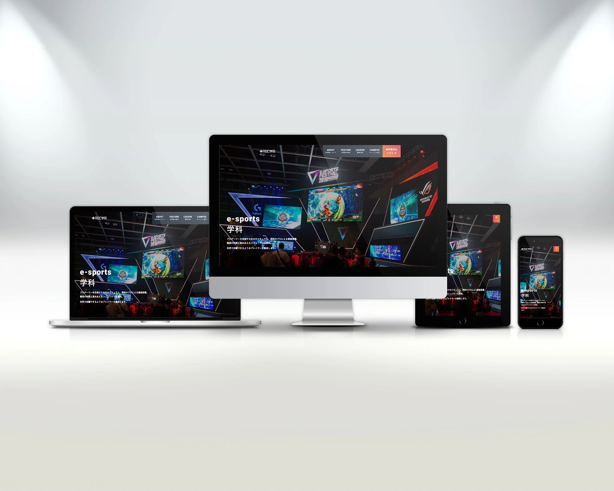

はじめに
信頼感と近代的な要素を両立したサイトを作りたいと思い、専門学校をテーマに選びました。
また、資料請求へのアクションを促すような構成を意識しました。
資料請求ボタンの周りにパンフレットの表紙をふわふわとアニメーションさせ、目立たせています。
スタイリッシュにするため、英語主体のメニューにしながらも、ユーザーを迷わせないように日本語のサブタイトルも下部に記載しました。
メニューにはグラデーションをかけ、のっぺりとした印象を与えないようにしています。
ヒーローエリアについて
白いキャッチコピーが背景に埋もれてしまわないように、ヒーローエリア内を覆うdiv要素に黒いフィルターをかけました。
また、ヒーローエリアの背景画像に「object-fit: cover;」を指定することで、画面幅が変動してもトリミングされるようにしています。
コンテンツエリアについて
「当学院について」内は、画像にボックスシャドウをかけました。黒背景に暗い画像を重ねた際にメリハリがつくと考えたからです。
「当学院の強み」エリアでは、4項目がひとつずつ現れるように、animation-delayの設定にこだわりました。
「授業内容」エリアにはアコーディオンを採用。 JavaScriptを使用しています。ステータスの変化がわかりやすいように、開いた項目だけ色が変わるようにしました。
「キャンパス紹介」エリアでは、Flexboxを使用し画像と文章を並べています。 row-reverseを指定し、左右交互にアイテムを配置することで、Z字状に視線誘導ができるようにしました。
資料請求エリアについて
ボタン上部に「簡単3分!」の吹き出しを設置し、資料請求へのハードルを下げようと試みました。
また、ボタン横にパンフレットの表紙をふわふわとアニメーションさせました。
どのようなパンフレットがもらえるのか、具体的なイメージが湧きやすくなると考えたからです。
フリーダイアルのアイコンは、装飾的な意味合いが強いため疑似要素で配置しました。
SNSリンクアイコンは、hover時にズームします。ブランドカラーを変えずにhoverしたことがわかるように設定しました。